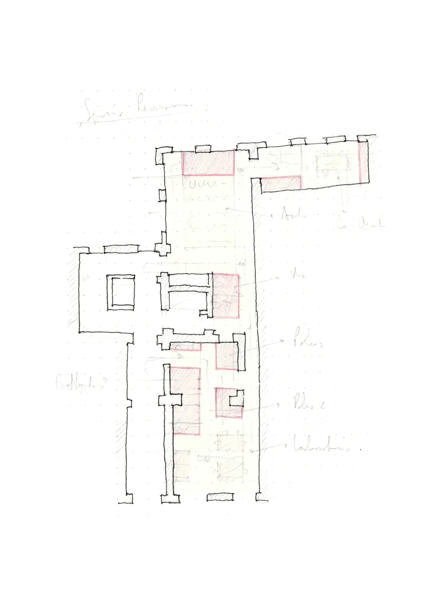
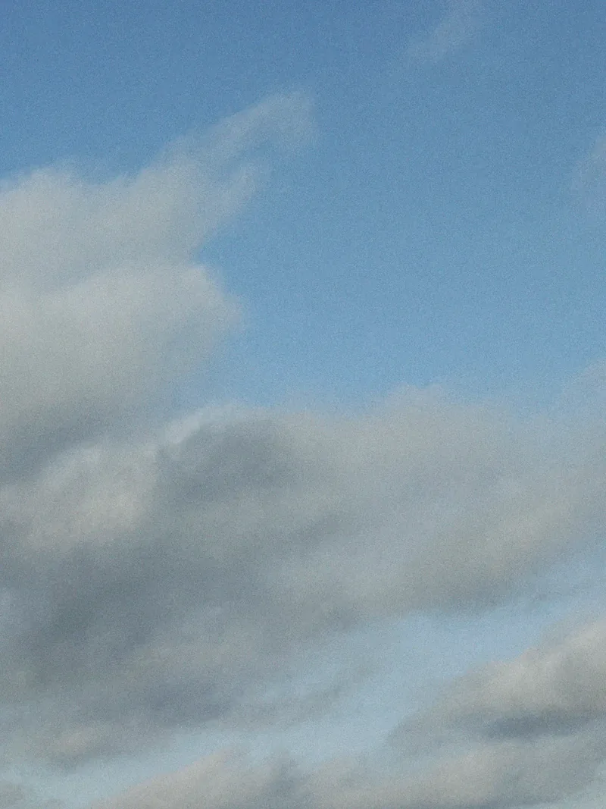
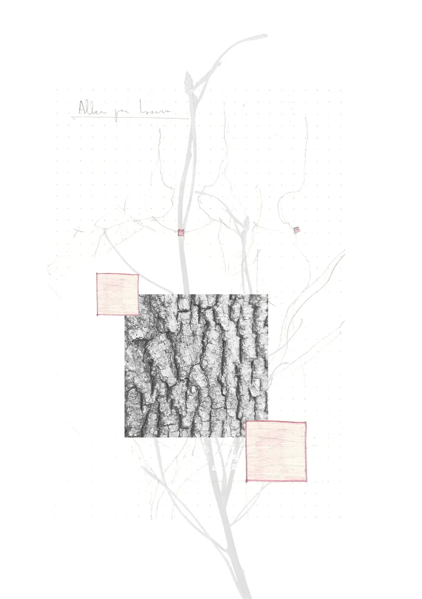

Progetti
Ogni progetto nasce da condizioni specifiche: un edificio, un luogo, una funzione da ripensare o una nuova possibilità da esplorare. La raccolta comprende interventi residenziali, spazi commerciali e ricerche progettuali, accomunati dall'attenzione alla composizione, ai materiali e alla relazione tra spazio e funzione.

Interni residenziali
Castelfranco Emilia, Italia
2027, in costruzione

Due appartamenti
Centro storico, Modena, Italia
2027, progetto
con Geom. Alessandro Orrea

Concorso
Via De Gennaro, Napoli, Italia
2026

Villa indipendente
Reggio Emilia, Italia
2026

Bar e ristorante
Corso Canalgrande, Modena, Italia
2025

Appartamento
Via Malmusi, Modena, Italia
2025
con tilde studio

Concorso
Corso Matteotti, Fano, Italia
2025

Appartamento
Via Fusco, Modena, Italia
2022

Gioielli in ceramica
2026

Gioielli in titanio
2022